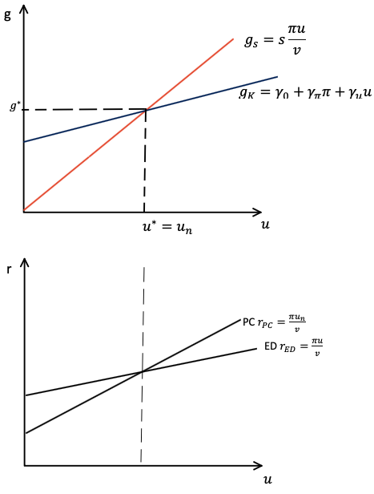
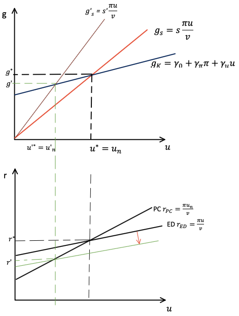
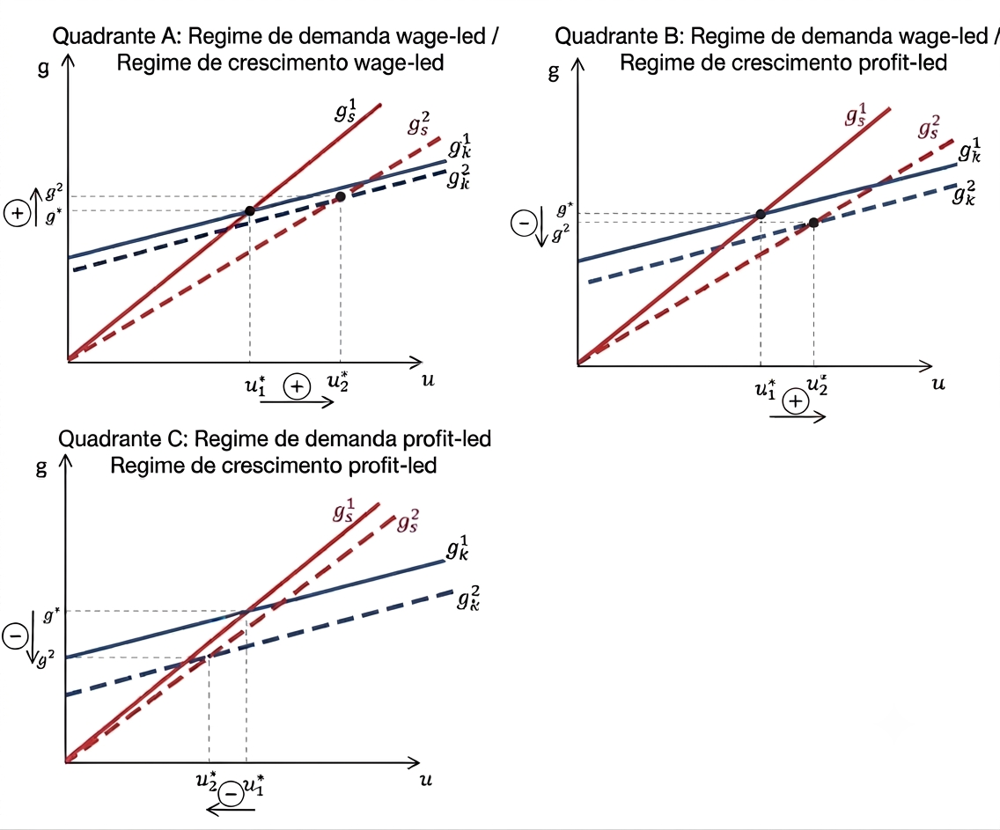

5 Modelo Neo-Kaleckiano (Bhaduri e Marglin)
5.1 Introdução
O modelo neokaleckiano desenvolvido por Bhaduri e Marglin representa uma das principais extensões da tradição kaleckiana de crescimento e distribuição. Seu objetivo é incorporar, de forma explícita, o efeito da distribuição funcional da renda sobre as decisões de investimento, permitindo analisar diferentes regimes de demanda e crescimento.
O modelo parte da estrutura do modelo kaleckiano canônico, mas modifica a função de investimento ao introduzir a participação dos lucros na renda (profit share) como um determinante autônomo do investimento desejado. Essa modificação torna possível distinguir economias em que aumentos da parcela dos lucros estimulam a atividade econômica daquelas em que o crescimento é favorecido pelo aumento da participação dos salários.
Ao final deste capítulo veremos que essa alteração aparentemente simples produz resultados bastante ricos, permitindo diferenciar:
- regimes de demanda wage-led e profit-led;
- regimes de crescimento wage-led e profit-led;
- situações em que demanda e crescimento respondem de maneira distinta às mudanças distributivas.
5.2 A crítica ao modelo kaleckiano canônico
Este modelo parte da estrutura do modelo canônico, mas estabelce uma divergênica importante a partir de uma crítica à função de investimento. Bhaduri e Marglin apontaram que o modelo canônico de crescimento kaleckiano superestima o papel da demanda efetiva e subestima o papel da distribuição de renda sobre o investimento.
No modelo kaleckiano apresentado no capítulo anterior, o investimento depende positivamente do grau de utilização da capacidade produtiva. Para fins de praticidade, representaremos função de investimento conforme o capítulo anterior do modelo canônico:
\[g_{K}=\gamma_0+\gamma_r r + \gamma_u u\]
em que:
- \(\gamma_0\) representa o componente autônomo do investimento;
- \(\gamma_u>0\) mede a sensibilidade do investimento ao grau de utilização da capacidade;
- \(u\) representa o grau de utilização.
Se lemrbarmos que \(r=\frac{\pi u}{v}\), podemos reescrever a equação acima como:
\[\begin{aligned} g_K=\gamma_0 + \gamma_r \frac{\pi u}{v} + \gamma_u u \\ g_K = \gamma_0 + \left(\gamma_r \frac{\pi}{v}+\gamma_u \right) u \end{aligned} \tag{5.1}\]
em que \(\pi\) representa a participação dos lucros na renda e \(v\) corresponde à relação capital-produto.
Uma crítica inicial é que, conforme podemos constatar na Equação 5.1, o grau de utilização da capacidade tem impacto duplo sobre o investimento. Quando a demanda efetiva aquece \((u\uparrow)\), as firmas aumentam o investimento tanto pelo efeito acelerador como pelo efeito lucratividade (ver termo entre parênteses na Equação 5.2).
Essa especificação sugere que o impacto será sempre amplificado, pois pressupõe que sempre temos \(\gamma_u > 0\). Entretanto, essa relação positiva entre grau de utilização e investimento possui uma relação implícita nada trivial. O fato de \(\gamma_u\) se sempre positivo pode ser interpretado como: tudo o mais constante (inclusive a taxa de lucro), o aumento do grau de utilização conduz ao aumento da taxa de investimento.
Repare que manter a taxa de lucro constante após ocorrer o aumento do grau de utilização só será possível se houver um aumento proporcional da participação dos lucros na renda. Isso é mais fácil de ser verificado pela representação algébrica:
\[\bar{r} = \frac{\pi \downarrow u\uparrow}{v}\]
No entanto, devemos lembrar que a parcela dos lucros na renda é diretamente relacionada com a taxa de markup (ver Equação 4.6). Ou seja, a relação descrita acima sugere que o modelo kaleckiano admite, implicitamente, que uma firma pode observar uma redução do seu markup e, ainda assim, decidir ampliar seus investimentos devido ao grau de utilização permanecer elevado.
Bhaduri e Marglin questionam precisamente essa hipótese.
Os autores argumentam que as firmas não observam apenas o grau de utilização da capacidade ao decidir investir.
A distribuição funcional da renda (refletida na participação dos lucros ou, equivalentemente, no markup) também influencia as expectativas de rentabilidade futura.
5.3 A função de investimento de Bhaduri e Marglin
Como alternativa, Bhaduri e Marglin retomam a tradição inaugurada por Joan Robinson. Segundo essa abordagem, o investimento depende da taxa de lucro esperada, e não apenas da taxa de lucro realizada.
Assumindo uma relação capital-produto constante, a taxa de lucro esperada depende positivamente de:
- o grau de utilização da capacidade produtiva: \(u\);
- a participação dos lucros na renda: \(\pi\).
Uma representação linear dessa hipótese pode ser escrita como:
\[g_K= \gamma_0 + \gamma_{\pi}\pi + \gamma_u u \tag{5.2}\]
em que
- \(\gamma_{\pi}>0\); mede a sensibilidade do investimento à distribuição funcional da renda;
- \(\gamma_u>0\); representa a resposta ao grau de utilização.
Nesta versão, a decisão de investimento depende não da taxa de lucro realizada, mas da distribuição de renda desejada. Mesmo o \(\gamma_u\) sendo positivo, como antes, ele já não mais pressupõe a manutenção da taxa de lucro, pois o que influencia o investimento é a parcela dos lucros, não sua taxa. Desta forma, pode ocorrer de a taxa de lucro realizada ficar abaixo da que seria compatível com o markup desejado pelas firmas, fato que desestimularia novos investimentos e reduziria a taxa de crescimento do estoque de capital por meio do parâmtero \(\gamma_\pi\).
Quando \(\gamma_{\pi}=0\), a Equação 5.2 reduz-se aproximadamente à função de investimento estudada no capítulo anterior. Aqui, basicamente, temos duas forças oeprando sobre o investimento. De um lado, a demanda efetiva aquecida estimula o investimento via efeito acelerador, enquanto que, por outro lado, o aumento da parclea salarial (wage-share) desestimnula o investimento via efeito lucratividade. O resultado líquido sobre a taxa de crescimento do investimento dependerá de qual destes efeitos preponderará.
5.4 O equilíbrio do modelo
A condição de equilíbrio continua sendo dada pela igualdade entre poupança e investimento. Neste caso, igualdade entre taxa de poupança e taxa de investimento:
\[g_{s}=g_{K}.\]
Assumindo a função de poupança apresentada pela Equação 2.1 e já substituindo \(r\) chegamos em:
\[g_s=\frac{s_\pi\pi u}{v}, \tag{5.3}\]
e substituindo a Equação Equação 5.2, obtemos
\[\frac{s\pi}{v}u=\gamma_0+\gamma_{\pi}\pi+\gamma_u u\]
Isolando o grau de utilização de equilíbrio,
\[u^{*}=\frac{\gamma_0+\gamma_{\pi}\pi}{\dfrac{s_\pi \pi}{v}-\gamma_u} \tag{5.4}\]
Esta expressão mostra que o grau de utilização depende simultaneamente da distribuição funcional da renda e da sensibilidade do investimento tanto à parcela dos lcuros, quanto à demanda.
A linearidade assumida, apesar de beneficiar a matemática, traz algumas contradições que precisamos lidar. A primeira dela é que calcular a derivada aqui não será equivalente ao resultado obtido pelo Bhaduri e Marglin. Mas, para fins didáticos, abriremos mão do rigor matemático para elucidar o resultado de Bhaduri e Marglin.
Para fins didáticos, repare que a parcela dos lucros na renda entra tanto no numerador quanto no denominador do grau de utilização e seu efeito sobre esta variável dependerá de dois parâmetros principais. Por um lado, a concentração de renda nos lucros amplia o investimento e aquece a demanda pelo efeito lucratividade. Só que, por outro lado, esta mesma concentração de renda em favor dos que tem maior propensão a poupar (portanto, consomem menos) desaquece a demanda pelo efeito acelerador. O resultado líquido dependerá de qual efeito preponderará ao final da mudança na distribuição de renda.
Caso \(\gamma_u > \gamma_\pi\), o fato de o efeito acelerador ser maior que o efeito da lucratividade garante uma relação inversa entre profit-share e grau de utilização, indicando que a economia desacelera quando a renda se concentra nos lucros e vice-versa. Assim, dizemos se tratar de um regime de demanda wage-led, ainda que sem propensão a poupar dos salários.
Quando
\[\frac{\partial u^{*}}{\partial\pi}<0,\]
um aumento da participação dos salários eleva o grau de utilização da capacidade.
Dizemos que a economia apresenta um regime de demanda wage-led.
Caso \(\gamma_\pi > \gamma_u\), faz com que o efeito lucratividade prepondere sobre o efeito acelerador, garantindo uma relação direta entre concentração de renda em favor dos lucros e grau de utilização. Este resultado sugere que o efeito sobre investimento, provocado pelo aumento do mark-up, mais que compensa a queda do consumo, provocada pela queda na parcela dos salários. Assim, temos um regime de demanda profit-led, em que a demanda sobe sempre que os salários caem.
Quando
\[\frac{\partial u^{*}}{\partial\pi}>0,\]
uma redistribuição da renda em favor dos lucros amplia a demanda agregada.
Nesse caso, a economia encontra-se em um regime de demanda profit-led.
Repare que dividirmos todo mundo na equaçãoa cima por \(\pi\) fico com: \[u=\frac{\frac{\gamma_0}{\pi} + \gamma_\pi}{\frac{s_\pi}{v}-\frac{\gamma_u}{\pi}}\] Neste caso, a ambiguidade desaparece e a única possibilidade é um regime de demanda wage-led. O mesmo aconteceria se eu calculasse a derivada parcial de \(u\), obtendo: \[\frac{\delta u^{*}}{\delta \pi}= - \frac{\gamma_\pi \gamma_u +\gamma_a \frac{s}{v}}{\left( s_\pi \frac{\pi}{v} - \gamma_u \right)^2}<0\] A razão disso é que a simplicidade assumida gerou um efeito linear da concentração de renda sobre o investimento, mas um efeito não linear sobre o consumo, por causa do efeito acelerador. Ou seja, é uma simplicidade útil para fins didáticos, mas que causa complicações não fidedignas ao modelo de BM.
Seguindo com nossa derivação do equilíbrio, temos de substituir o resutlado encontrado para o grau de utilização na Equação 5.2, o que nos leva à:
\[g^*=\gamma_0 + \gamma_{\pi}\pi +\gamma_u \left(\frac{\gamma_0+\gamma_\pi \pi}{s_\pi\frac{\pi}{v}-\gamma_u}\right) \tag{5.5}\]
A principal inovação do modelo consiste em mostrar que alterações distributivas podem produzir efeitos distintos sobre a demanda agregada e sobre o crescimento. A depender do regime de demanda, poderemos determinar qual será o regime de crescimento.
Para casos de regime de demanda profit-led, a análise fica bem simples. Pois se o último termo da equação já responder positivamente ao aumento de \(\pi\), o segundo termo só amplificará a dimensão do impacto. Assim, se tivermos um regime de demanda profit-led, o regime de crescimento também será profit-led. O que os autores chamam de Exhilarationist.
Para casos de regime de demanda wage-led, a contradição aparece. Se o ultimo termo da equação responde negativamente ao aumento de \(\pi\), o resultado sobre o crescimento dependerá do efeito da lucratividade sobre o investimento. Se o segundo termo compensar, em magnitude, o terceiro termo, o crescimento responderá positivamente ao aumento da parcela dos lucros na renda. Assim, temos o caso de um regime de demanda wage-led, mas um regime de crescimento profit-led.
Quando
\[\frac{\partial g^{*}}{\partial\pi}>0,\] uma redistribuição da renda em favor dos lucros amplia a demanda agregada.
Nesse caso, a economia encontra-se em um regime de crescimento profit-led.
Contudo, se o efeito da lucratividade sobre o investimento não for grande o suficiente para compensar o efeito acelerador, o crescimento declinará, mesmo com o segundo termo sendo positivo. Isso produziria um regime de crescimento wage-led, assim como o regime de demanda.
Quando
\[\frac{\partial g^{*}}{\partial\pi}<0,\]
uma redistribuição da renda em favor dos salários amplia a demanda agregada.
Nesse caso, a economia encontra-se em um regime de crescimento wage-led.
A tabela a seguir resume as possibilidades de combinação entre regimes de demanda e regimes de cresimento:
| Sinais das derivadas parciais | Regime de demanda e crescimento liderados pelos salários | Regime de demanda liderado pelos salários e de crescimento liderado pelos lucros | Regime de demanda e de crescimento liderados pelos lucros |
| \(\partial u^*/\partial\pi\) | \(-\) | \(-\) | \(+\) |
| \(\partial g^*/\partial\pi\) | \(-\) | \(+\) | \(+\) |
Em suma, este modelo permite dois tipos distintos de regime de demanda e de crescimento. Esse resultado decorre da existência de dois efeitos opostos.
Por um lado, um aumento da parcela dos lucros reduz o consumo, uma vez que os capitalistas possuem maior propensão a poupar.
Por outro lado, uma maior participação dos lucros estimula o investimento ao elevar a rentabilidade esperada.
O efeito líquido dependerá dos parâmetros do modelo.
Este resultado foi usado pela literatura para analisar que padrões econômicos wage-led geram um ambiente de ganha-ganha no conflito, em que os capitalistas tendem a ter menor resistência à queda na participação da renda. Em certa medida, ainda que a participação na renda esteja caindo, o ritmo de acumulação segue aquecido, amenizando os efeitos distributivos.
Mas economias que apresentam um regime de demanda wage-led e crescimento profit-led estimula o conflito, pois ao buscar maiores taxas de acumulação, os capitalistas desaquecem a economia. O conflito social torna-se mais evidente, uma vez que os ganhos de uma classe implicam, necessariamente, ônus para outra.
5.5 Analisando o equilíbrio com gráficos

A representação gráfica deste modelo, inicialmente, não se altera tanto em relação à versão canônica do modelo.
De um lado, temos uma reta de crescimento da poupança positivamente relacionada ao grau efetivo de utilização da capacidade instalada, representando a Equação 5.3.
Por outro lado, a reta de investimento também responde positivamente ao grau de utilização, além da distribuição de renda, conforme a Equação 5.2.
A interseção dessas duas curvas determina o equilíbrio simultâneo entre crescimento e utilização da capacidade. O que pode ser imediatamente transportado para o quadrante inferior da Figura 5.1.
O que vemos na parte inferior é o encontro das curvas PC e ED, representando a curva de Phillips e a de demanda efeitva respectivamente. Enquanto a primeira (PC) é calculada com base no grau desejado de utilização, onde as firmas atingem o markup desejado, a segunda registra a taxa de lucro efetivada a partir da demanda realizada.
No equilíbrio, a dinâmica do grau de utilização garante a convergência destas taxas de lucro \((r_{PC}=r_{ED}).\) Sempre que a poupança crescer mais rápido que o investimento \((g_s>g_K)\), a taxa de lucro realizada pelas firmas estará menor do que àquela que equilibraria o conflito distributivo \((r_{ED}<r_{PC})\). Nestas circunstâncias, as firmas deixarão de realizar novos investimentos, reduzindo o grau de utilização em direção ao normal.
Sempre que o investimento crescer mais rápido que a poupança \((g_K>g_s)\), o grau de utilização tende a se elevar. Com a demanda efetiva gerando uma taxa de lucro realizada superior àquela que equilibraria o conflito distributivo \((r_{ED}>r_{PC})\). A diferença deste modelo reside no fato de que, agora, a parcela dos lucros na renda influencia tanto a inclinação da taxa de crescimento da poupança (ver Equação 5.3), quanto a taxa de crescimento do investimento (ver Equação 5.2). Portanto, alterações na distribuição de renda terão efeito de:
rotacionar a reta de crescimento da poupança \((g_s)\)
deslocar a reta de crescimento do investimento \((g_K)\)
5.6 Paradoxo dos custos e da parcimônia
Assim como discutido na ?sec-paradoxos-kal, temos que analisar os paradoxos dos custos e da parcimônia (Thrifit) no fechamento neo-kaleckiano.
Paradoxo dos custos \(\rightarrow\) sugere que o aumento dos salários, ao aquecer a demanda efetiva, teria o resultado macroeconômico de elevar a taxa de lucro das firmas.
\[\frac{\partial r}{\partial \pi} < 0 \]
Paradoxo da parcimônia \(\rightarrow\) sustenta que o aumento da propensão marginal a poupar, ao desaquecer a demanda efetiva, teria impacto negativo sobre a taxa de investimento e, portanto, sobre a poupança macroecômica.
\[\begin{aligned} \frac{\partial u}{\partial s} < 0\\ \& \\ \frac{\partial g}{\partial u} >0 \end{aligned}\]

O paradoxo de Thrifit segue válido no modelo neo-kaleckiano de Bhaduri e Marglin.
Graficamente podemos constatar isso pela rotação que a mudança da propensão a poupar causa na Equação 5.3. A curva \(g_s\) rotaciona para dentro e intercepta a curva \(g_K\) em um novo ponto de equilíbrio, com menores taxas de crescimento e de demanda.
Intuitivamente, temos que o aumento da propensão a poupar derruba o consumo e reduz a demanda efetiva o que, para um dado markup desejado, faz com que as firmas optem por reduzir a taxa de crescimento dos investimentos e manter sua parcela dos lucros na renda, ainda que com menor taxa de lucro.
\[ s_\pi\downarrow \rightarrow g_s\downarrow \rightarrow u\downarrow \rightarrow g_K\downarrow \rightarrow u_n\downarrow \]
Algebricamente, não precisamos derivar para notar que o aumento de \(s_\pi\) na Equação 5.4 leva ao aumento do denominador, fato que reduz a razão. Ou seja, elevar \(s_\pi\) reduz \(u^*\). Concomintantemente, pela Equação 5.2 vemos que a queda de \(u\), tudo o mais constante, leva à queda de \(g_K\).
Assim, as duas condições para que o paradoxo de Thrifit ocorra foram satisfeitas.
Já o paradoxo dos custos passa a ter um resultado ambíguo nesta versão do modelo. Graficamente, vemos dois movimentos simultâneos:
deslocamento da reta da taxa de investimentos \((g_K)\)
rotação da reta da taxa de poupança \((g_s)\)

A Figura 5.2 ilustra o efeito de um aumento da parcela dos salários na renda em três casos distintos. Se lembramos da Equação 2.2, é fácil notar que para a taxa de lucro subir após o aumento dos salários (queda da parcela dos lucros), é preciso que o grau de utilização suba mais que proporcionalmente. Em outras palavras, o paradoxo dos custos só será verificado em um regime de demanda wage-led. A seguir, vamos estudar esta relação entre parcela dos salários na renda e grau de utilização.
Como trata-se de um gráfico bidimensional, que considera \(u\) e \(g\), podemos pensar na mudança de \(\pi\) na Equação 5.2 como uma mudança de intercepto da reta \(g_K\). Neste caso, o aumento dos salários é equivalente à queda da parcela dos lucros, portanto, diminuição do intercepto e, por isso, vemos um deslocamento para baixo da reta \(g_K\).
Concomitantemente, ao olhar para Equação 5.3 como uma equação linear, podemos notar que o \(\pi\) funciona como um coeficiente angular da reta. Ou seja, a queda do \(\pi\) reduz o coeficiente angular de uma função de primeiro grau, reduzindo sua inclinação (rotacionando no sentido horário). Em outras palavras: tornado a reta do plano cartesiano mais “deitada”.
O Quadrante A mostra que após a rotação da curva \(g_S\) no sentido horário e o deslocamento para baixo de \(g_K\), o novo equilíbrio se dá em um ponto compatível com maior grau de utilização e maior taxa de crescimento. Enquanto o primeiro resultado denota um regime de demanda liderado por salários, o segundo deve ser lido como um regime de crescimento liderado pelos salários.
Em uma economia totalmente wage-led, o conflito distributivo fica menos intenso, já que o aumento dos salários leva ao aumento do ritmo de acumulação do capital. Neste caso, o paradoxo dos custos pode ser verificado no curto e no longo-prazo.
Observe que o resultado do Quadrante A depende de um deslocamento relativamente pequeno da curva \(g_K\) e de uma rotação mais acentuada da curva \(g_S\).
Em termos econômicos, isso significa que o aumento da participação dos salários na renda exerce apenas um efeito limitado sobre as expectativas de lucratividade dos empresários, enquanto o estímulo ao consumo e à demanda efetiva é suficientemente forte para elevar o grau de utilização da capacidade instalada. Nessas circunstâncias, o efeito acelerador sobre o investimento supera o efeito lucratividade, permitindo a ocorrência de um regime de demanda e crescimento liderado pelos salários (wage-led).
Como podemos notar pela Equação 5.2, o tamanho do deslocamento da curva de investimentos dependerá diretamente do quão sensível o investimento é em relação à distribuição de renda (representado pelo parâmero \(\gamma_\pi\)). Quanto mais sensível for, maior será o deslocamento da reta \(g_K\), aumemtando as chances de um regime de demanda profit-led (para dado \(\gamma_u\)).
Em suma e simplificadamente, o efeito líquido de uma distribuição de renda em favor dos salários dependerá do efeito líquido entre o efeito lucratividade \((\gamma_\pi)\) e o efeito acelerador \((\gamma_u)\). Quanto maior for o efeito acelerador em relação ao efeito lucratividade, maiores serão as chances de termos um regime de demanda e crescimento liderado pelos salários (wage-led).
O Quadrante B da Figura 5.2 representa um modelo de demanda wage-led, mas um regime de crescimento profit-led. Isto porque, apesar de o grau de utilização crescer após o aumento da parcela dos salários, isso não é suficiente para compensar a desaceleração do investimento puxada pela consequente queda da parcela dos lucros.
Neste caso, a validade do paradoxo dos custos dependerá de o aumento do grau de utilização compensar a queda da parcela dos lucros na renda, a ponto de aumentar a taxa de lucro. Mais uma vez, menores serão as chances disso acontecer, quanto maior for o efeito lucratividade do investimento, capturado pelo parâmetro \(\gamma_\pi\). Aqui vemos como um regime de demanda liderado pelos salários é condição necessária, mas não suficiente para assegurar que o regime de crescimento também seja liderado pelos salários (como vimos na Tabela 5.1).
Por fim, o Quadrante C da Figura 5.2 mostra que após o aumento da parcela dos salários, o novo equilíbrio ocorre já com o grau de utilização menor do que o inicial, caracterizando o regime de demanda como liderado pelos lucros (profit-led). Nestas circunstância, não tem como o regime de crescimento não ser liderado pelos lucros também, já que o efeito sensibilidade do investimento se mostrou significativo ante o efeito acelerador, provocando um forte deslocamento da curva \(g_K\). O paradoxo dos custos não é válido neste contexto.
Trabalhos empíricos conduzidos por autores neokaleckianos tendem a mostrar um efeito acelerador bem alto, enquanto estimações apontam para um baixo efeito lucratividade. Isto é, o investimento parece ser mais sensível à demanda do que à lucratividade.
Intuitivamente, esta combinação de parâmetros, verificados empiricamente, aumenta o efeito expansionista causado pela distribuição de renda e minimiza o efeito contracionista causado pelo desestímulo ao investimento devido a esta mesma distribuição.
5.7 Seção de estudo interativo
O gráfico abaixo permite explorar, de forma interativa, os efeitos de alterações na propensão a poupar e na distribuição funcional da renda sobre o equilíbrio do modelo neokaleckiano de Bhaduri e Marglin. Utilize os controles deslizantes para modificar os parâmetros e observe como as curvas e o ponto de equilíbrio se alteram.
Paradoxo da parcimônia
- Altere o slider vermelho correspondente à propensão a poupar (\(s\)).
- Observe a rotação da curva de poupança (\(g_S\)).
- Compare a posição inicial (linha contínua) com a posição final (linha tracejada).
Paradoxo dos custos
- Altere o slider verde correspondente à participação dos salários (\(w\)).
- Observe simultaneamente:
- a alteração da inclinação da curva de poupança;
- o deslocamento da curva de investimento, dada pela Equação 5.2;
- o novo ponto de equilíbrio.
Durante a utilização do simulador, procure responder às seguintes questões:
- Quais curvas se alteram quando aumenta a propensão a poupar (olhe o gráfico inferior também)?
- O aumento da participação dos salários desloca ou rotaciona as curvas?
- O que determina os regimes de demanda e de crescimento do modelo?
Após explorar diferentes valores para \(s\) e \(w\), explique, com suas próprias palavras, os mecanismos econômicos responsáveis pelas alterações observadas.
Sua resposta deve apresentar uma sequência lógica de causalidade, identificando:
- qual parâmetro foi alterado;
- quais curvas foram modificadas;
- por que essas curvas se deslocaram ou rotacionaram;
- como essas alterações afetaram o grau de utilização da capacidade e a taxa de crescimento;
- Qual é o regime de demanda e de crescimento em cada caso.
Evite apenas descrever o gráfico. Procure trazer a intuição econômica representada pelo modelo.
Agora, refaça o exercício anterior considerando o contexto do modelo abaixo. A diferença entre os dois modelos são apenas os parâmteros \(\gamma_\pi\) e \(\gamma_u\). Na versão abaixo, o investimento se mostra muito mais sensível à mudanças da distribuição de renda e a taxa de poupança menos sensível a esta mesma variável.
Repare que o regime de demanda e de crescimento não são o mesmo neste contexto. Faça o exercício e tente identificar as principais características presentes nesta representação. Explore os dois paradoxos para aplicar o conhecimento construído ao longo deste capítulo.